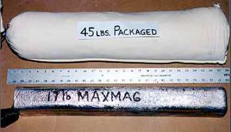

all about magnesium anodes
Magnesium anodes come in all shapes and sizes. The magnesium in a packaged anode weighs from 1 pound to 50 pounds. The most commonly used anode in the United States is a 17 pound anode. With 28 pounds of powdered backfill packed around the magnesium, a packaged 17 pound anode weighs about 45 pounds. It comes with 10 feet or 15 feet of #12, insulated solid copper wire. The backfill consists of 75% powdered gypsum, 20% powdered bentonite clay and 5% sodium sulfate. This mixture is a low cost, nonhazardous, electrically conductive earth backfill. A cotton bag holds the backfill around the inner metal bar. It decomposes over time in the ground. The anode is shipped in an outer disposable, plastic or paper bag to protect it from rain or snow. It is recommended that 5 gallons of water be poured on the anode after it is placed in the earth to wet the backfill. This lowers the resistance between the magnesium and the earth causing more electric current to flow. This provides more protective current than would be possible in dry soil.

Tests on underground propane tanks have shown that smaller anodes can be effective at controlling corrosion on a well coated tank. Small anodes are used when the surface area or object to be protected is small. They cost less than a larger anode, but cost the same as a large anode to install. However, it is important to remember that the life of a small anode is shorter than for a larger one. One of the more common questions asked is, "How long will an anode last?" Design engineers prefer to use larger anodes because they last longer.
A 17 pound magnesium anode can produce 1 amp of d.c. current for 1 year; therefore, if it produced 1/10 amp, it would last 10 years compared to 3-1/2 years for a 5 pound anode. A 17 pound anode placed in 1,000 ohm-cm clay would generate 170 M.A. of current and would last only 6 years. If the clay's resistivity is 2,000 ohm-cm, it would last 11 years. In 10,000 ohm-cm dry sand, it would last 52 years. A normal current output is under 100 M.A. However, this engineer has seen the natural current output of a magnesium anode reach 200 milliamps (M.A.) in wet, alkali rich clay. The current output is dependent on the resistivity of the soil or backfill in which the tank is installed. Clay or highly mineralized earth is very corrosive and has a low soil resistivity value of 1,000 to 2,000 ohm-cm. Conversely, dry sand is not corrosive and would have a soil resistivity value over 10,000 ohm-cm. In order to calculate an anode life, one has to measure the soil resistivity, know the weight of the anode, know the alloy composition of the magnesium and factor in the loss of magnesium due to self corrosion. Finally, when an anode is 85% consumed, it becomes too small to be effective. Because soil conditions change with time, one can hope for the best but should plan for the worst.
Magnesium anodes come in two alloys. H-1 or AZ-63 is 90% magnesium, 6% aluminum and 3% zinc. The zinc and aluminum lowers the cost of the anode but it also lowers the driving potential to about -1.55 volts referenced to a copper sulfate electrode. It will perform well in corrosive soil if the tank is well coated and will last longer than the high potential alloy. The other alloy is 99% pure magnesium. It is called a "high potential" anode as its open circuit potential is as high as -1.80 volts. It works better than the H-1 alloy anode in dry or resistant earth or where more current is needed because of a poorly coated tank. The higher potential forces more current to flow than would from an H-1 alloy anode. It costs more per pound but in many cases it is worth the extra cost.
©Copyright 1999-2009 Anode Systems Company
124 North 22nd Ct. Grand Junction, CO 81501 (888) 609-9766 toll-free
ANODE SYSTEMS COMPANY